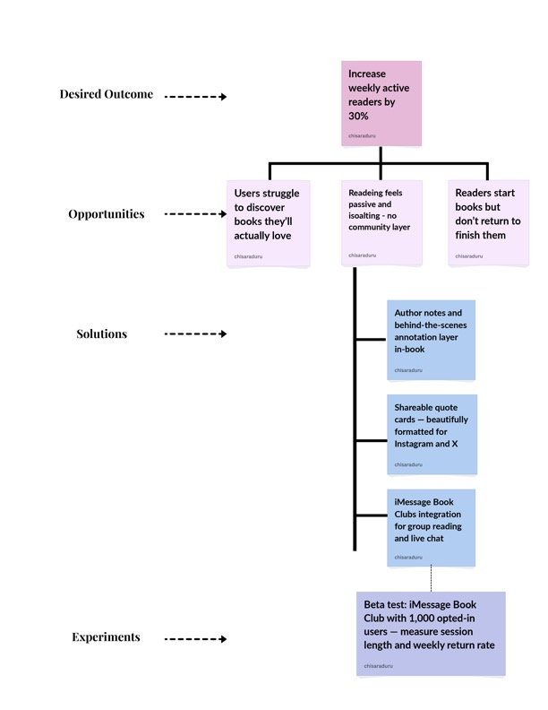

Opportunity Solution Tree - Apple Books
The OST starts with the desired outcome of increasing weekly active readers by 30%, then branches into three key opportunities: discovery friction, social isolation in reading, and poor completion rates. The selected solution branch focuses on iMessage Book Clubs as a response to reading feeling passive and isolating.

📎 Image: Opportunity Solution Tree - Apple Books. Chisara Duru, 2026.